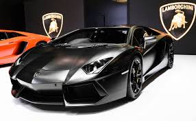

Alto redimiento
Los autos deportivos se caracterizan por ofrecer un alto rendimiento, lo que significa que están diseñados para alcanzar altas velocidades, acelerar
rápidamente y tener un manejo preciso. Estos vehículos suelen tener motores potentes, como V6, V8 o incluso V12, capaces de superar los 300 km/h en
algunos casos. Además, su tecnología permite una respuesta inmediata al conducir, lo que los hace ideales para competencias y circuitos.
Su aerodinámica está pensada para reducir la resistencia al aire y mejorar la estabilidad. Todo esto los convierte en autos rápidos, ágiles y
emocionantes de manejar. Sin embargo, su velocidad también requiere responsabilidad y conocimiento para conducirlos. No son vehículos comunes,
sino máquinas diseñadas para el desempeño extremo.
Diseño atractivo
El diseño de los autos deportivos es una de sus características más reconocidas. Su carrocería es baja, con líneas suaves o agresivas que transmiten
velocidad y fuerza. Estos autos no solo son bellos a la vista, también están diseñados para cumplir una función específica: mejorar la aerodinámica y
el control a altas velocidades. Cuentan con alerones, entradas de aire y difusores que ayudan a que el auto se mantenga estable al moverse rápido.
Los interiores también son elegantes, con materiales de lujo como cuero, fibra de carbono y pantallas digitales. Además, muchas marcas personalizan el
diseño para hacerlo único y reconocible, como el Lamborghini Aventador, el Ferrari 488 o el Porsche 911. Este equilibrio entre belleza y funcionalidad
es lo que hace que los autos deportivos sean admirados en todo el mundo.
Tecnologia avanzada
Los autos deportivos suelen estar equipados con tecnología de punta. Incorporan sistemas de suspensión inteligente, frenos de alto rendimiento,
control de tracción y modos de manejo que se adaptan al clima o estilo de conducción. Además, muchos usan materiales livianos como aluminio o fibra de
carbono para mejorar la velocidad y el consumo de combustible. Esta tecnología también incluye pantallas digitales, asistentes de conducción y
conectividad moderna. Por ser tan avanzados y costosos de fabricar, los autos deportivos suelen ser exclusivos: no cualquiera puede adquirir uno.
Algunas marcas incluso fabrican ediciones limitadas que aumentan su valor con el tiempo.
